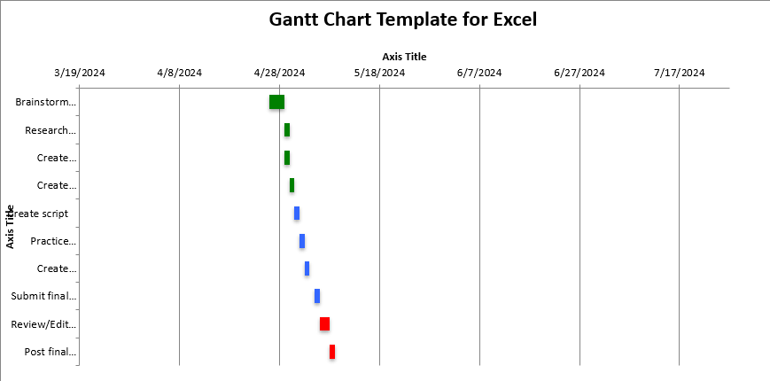

My Final Project will be on Web Accessibility, specifically what accessibility options we should be aware of and how accommodating them can be accomplished. This will reference the Web Content Accessibility Guidelines (WCAG), and will cover aspects like; website navigation without the use of a mouse, contrast and saturation decisions to accommodate visual impairments, accurate alternative text for images, transcripts for audio content, captions for video content, ensuring that content is legible and cohesive no matter the size screen it is viewed on, and a general commitment to building websites that are logically organized and easily navigated, no matter the user.
Learning about the Gantt Chart and how to officially work through Project Management has been enlightening for me! Managing a project has always been some degree of haphazard for me, even though I had come to a similar process when working on my own personal project. Sure, take the big task and break it down into smaller tasks. Then break down those tasks into even smaller tasks. And keep going until it isn’t worth breaking a task down any smaller. But all of the ancillary portions and the time prediction/management were never in my repertoire. I am looking forward to the simplicity of managing personal, work, and life projects with this newfound knowledge!